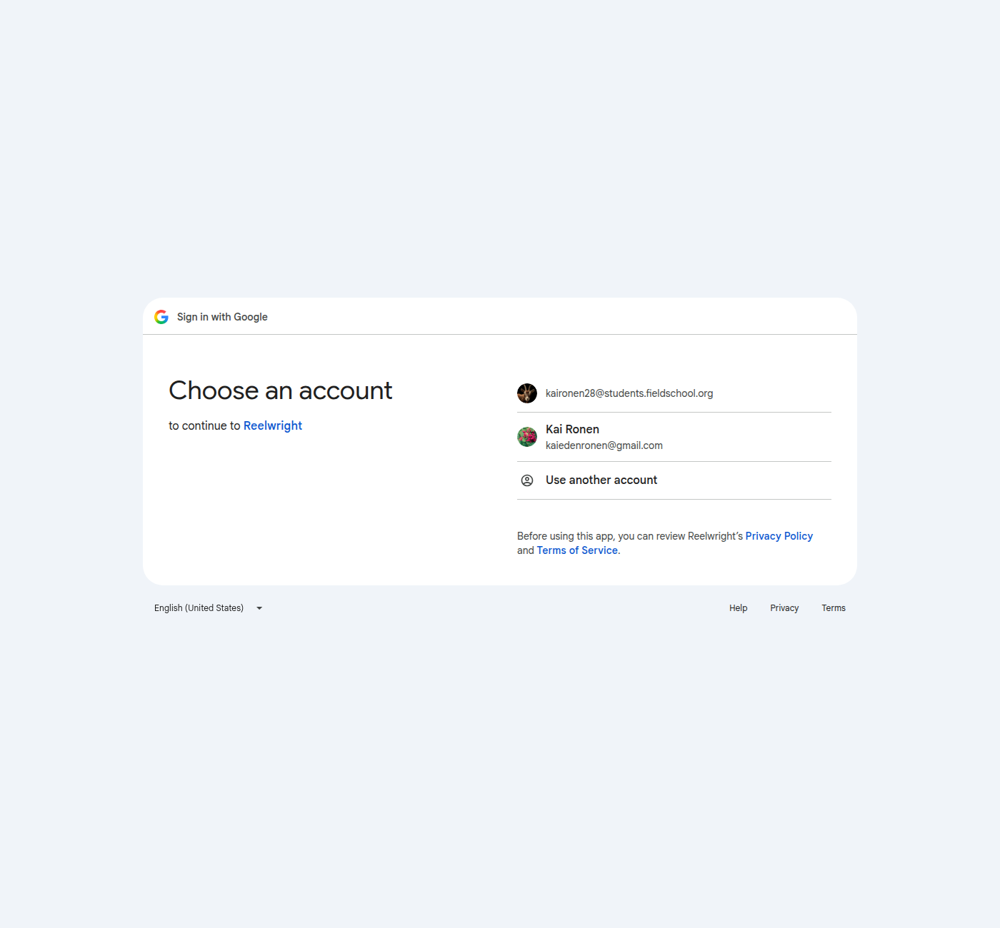
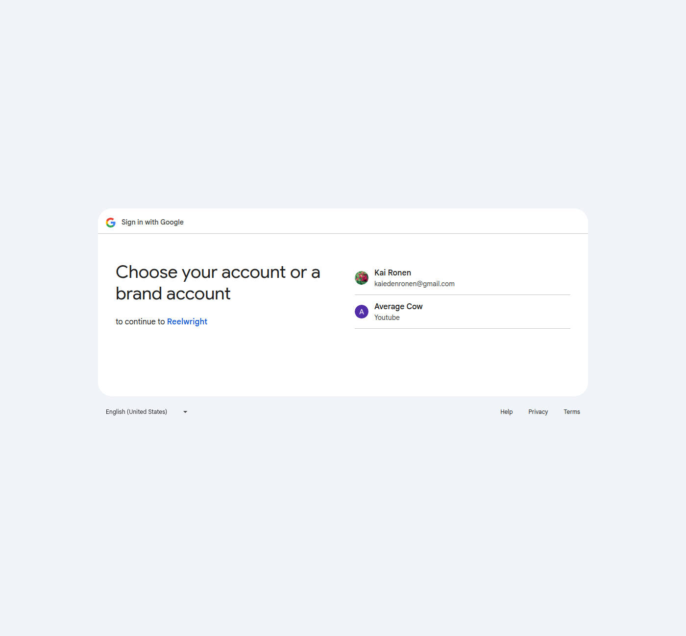
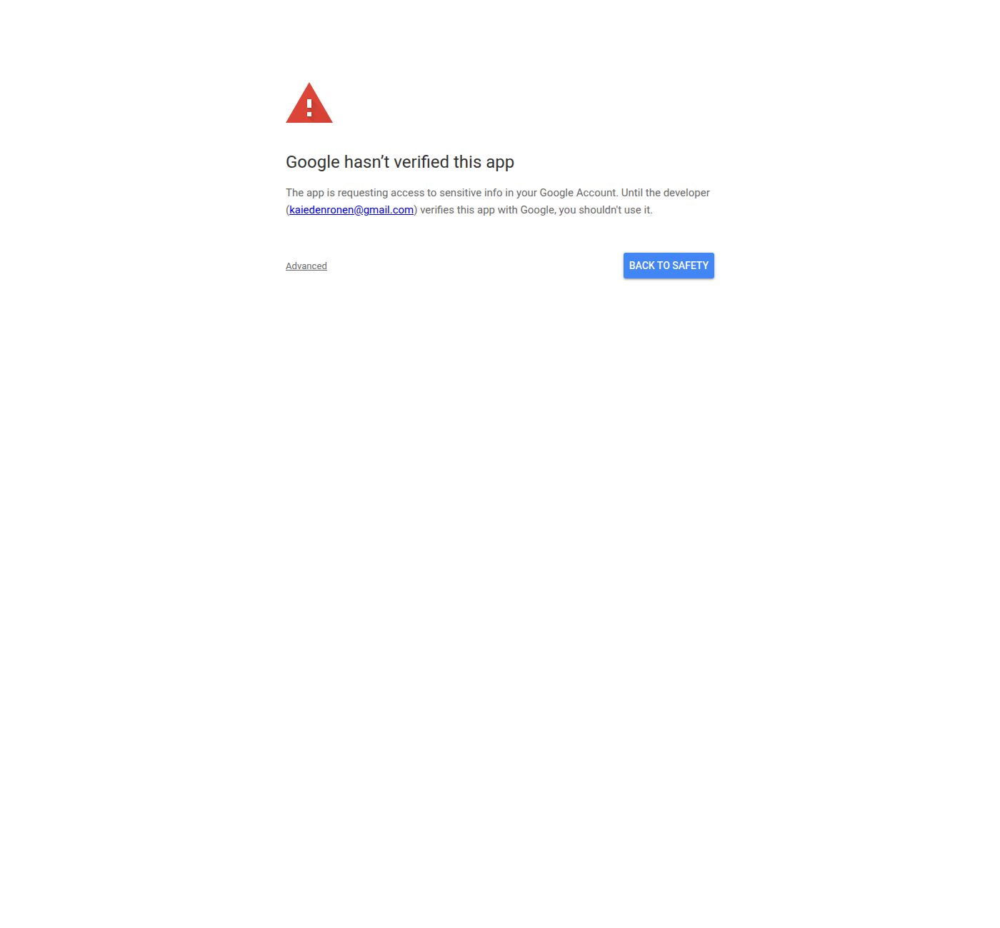
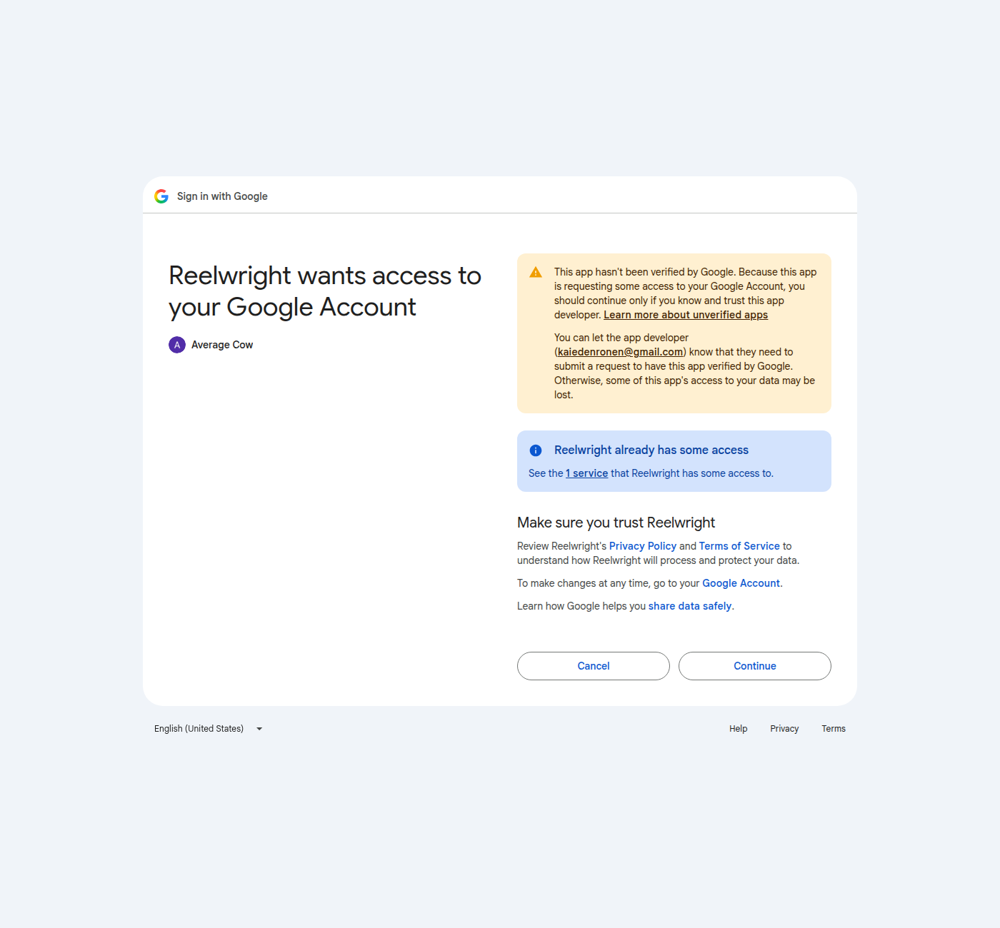

Reelwright — OAuth flow (PKCE, loopback redirect)
1. The user presses Sign in with Google in Reelwright — account chooser

2. Choosing the brand channel the video will be published to

3. Google's unverified-app warning (this audit is what removes it)

4. Consent: app name, channel, and the YouTube permission requested
